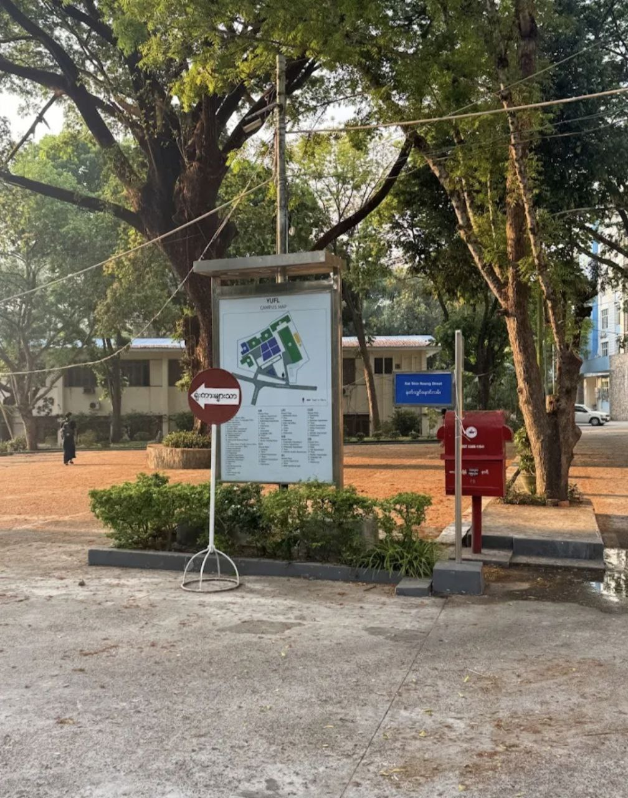
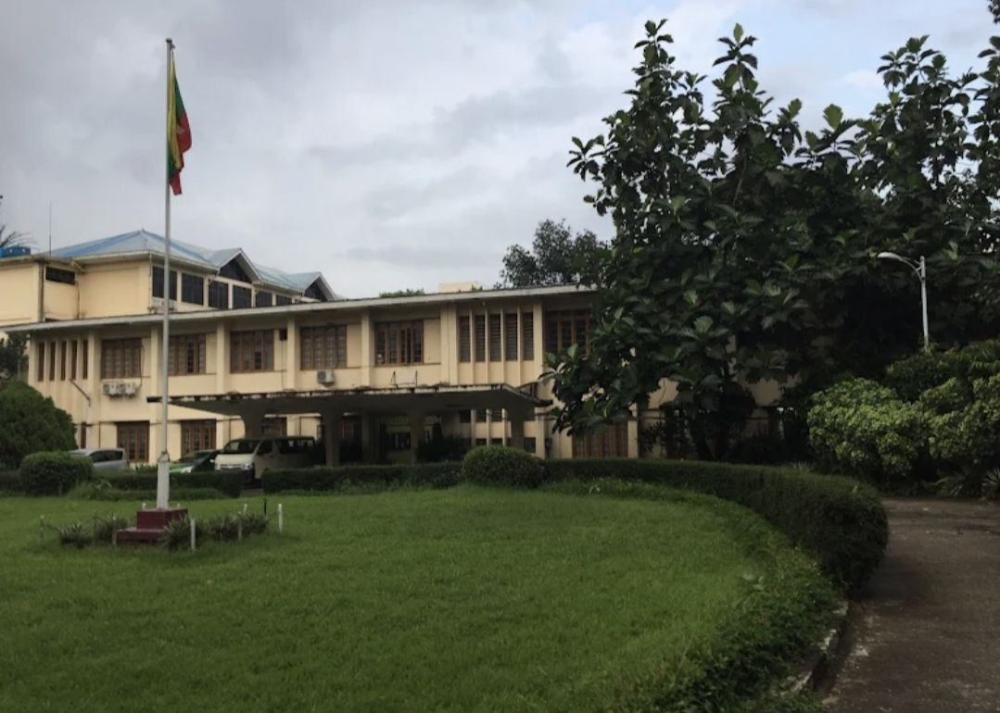
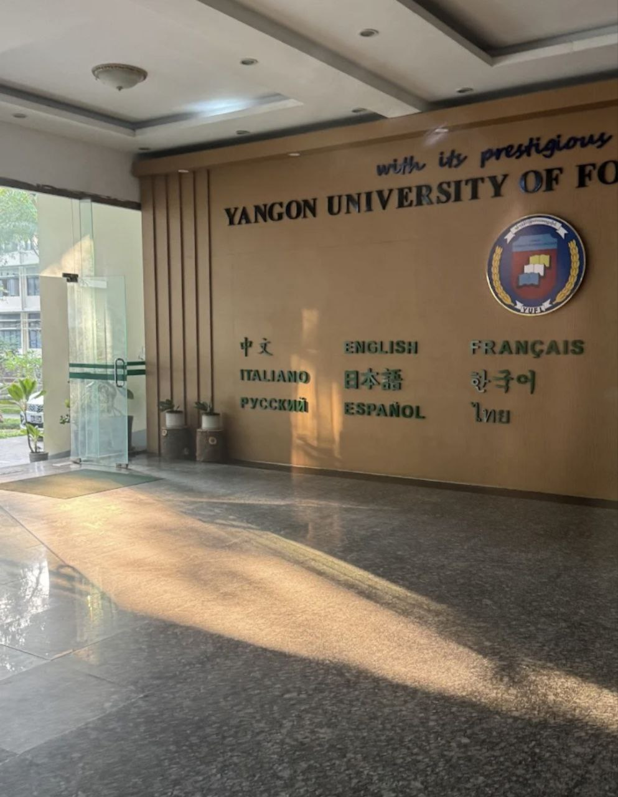
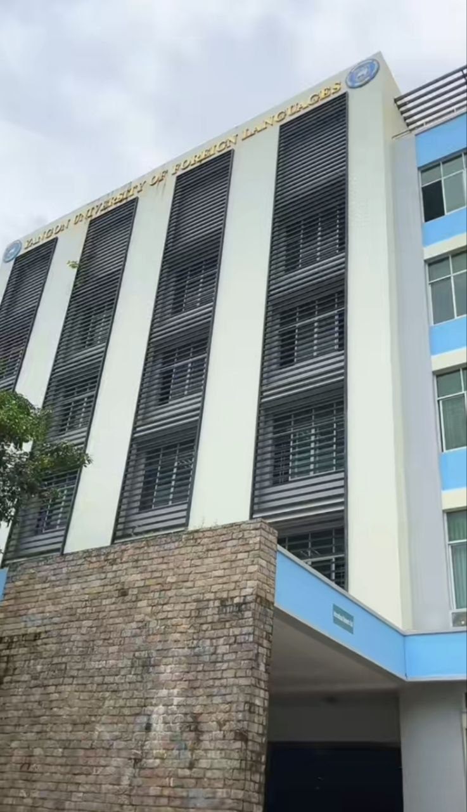
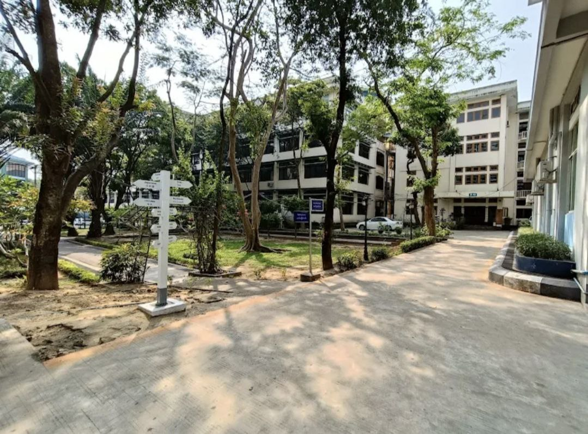
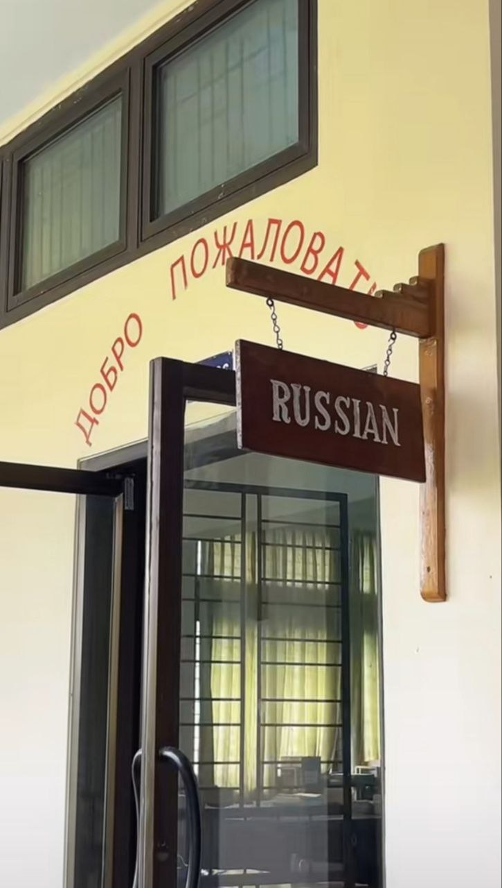

About the University
ရန်ကုန်နိုင်ငံခြားဘာသာတက္ကသိုလ် (အင်္ဂလိပ်: University of Foreign Languages, Yangon) သည် မြန်မာနိုင်ငံ၏ ပထမဆုံးသော နိုင်ငံခြားဘာသာတက္ကသိုလ်ဖြစ်သည်။ အချိန်ပြည့်ဘွဲ့သင်တန်းများ၊ အချိန်ပိုင်း ဒီပလိုမာသင်တန်းများနှင့် ညနေပိုင်းလက်မှတ်ရသင်တန်းများဖွင့်လှစ် ပို့ချလျက်ရှိသည်။ တရုတ်ဘာသာ၊ အင်္ဂလိပ်ဘာသာ၊ ပြင်သစ်ဘာသာ၊ ဂျာမန်ဘာသာ၊ အီတာလျံဘာသာ၊ ဂျပန်ဘာသာ၊ ကိုရီးယားဘာသာ၊ ရုရှားဘာသာ၊ စပိန်ဘာသာ၊ ထိုင်းဘာသာနှင့် နိုင်ငံခြားသားများအတွက် မြန်မာဘာသာတို့ကို သင်ကြားပေးလျက်ရှိသည်။
Why Choose YUFL?
Historic Flagship Campus
Over a century of academic tradition and a central role in Myanmar's higher education system.
Diverse Academic Departments
Twenty-one departments in arts, sciences and law offer broad study options and research opportunities.
Modernized Teaching Approach
Focus on student-centred learning to develop critical thinking and independent study skills.
National & Regional Influence
Produces many of Myanmar's leaders, academics and professionals in public and private sectors.
Campus Gallery

🏛️

📚

🏠
Academic Programs
Foreign language degree programmes
BA Foreign Languages
Bachelor of Arts (BA)Core 4-year degree offered through 13 language departments with intensive training in speaking, listening, reading and writing skills.
Language Majors
13 SpecializationsStudents specialize in one primary foreign language from 13 departments while studying English as second language and Myanmar language.
Translation & Linguistics
BA with Translation FocusAdvanced translation training between Myanmar language and foreign languages, plus linguistics and interpretation skills development.
Postgraduate Studies
MA Linguistics / TranslationMaster's programmes in Applied Linguistics, Translation Studies and selected language specializations for advanced language professionals.
Language Initiatives & Partnerships
International collaborations and language development programmes
International Language Certification
YUFL serves as official testing centre for JLPT (Japanese), HSK (Chinese), TOPIK (Korean), DELF (French) and other international language proficiency exams.
Embassy-Sponsored Language Courses
Specialized courses developed with Japanese, German, French, Chinese and Korean embassies for diplomats and government officials.
National Translation Centre
Provides official translation services for government documents, international conferences and legal materials across 13 languages.
National Language Teacher Training
Trains secondary school teachers in foreign language methodology, classroom management and modern language teaching techniques.
Student Life at YUFL
Language immersion environment in urban Yangon

Language Labs & Conversation Rooms
Modern multimedia language laboratories and conversation practice rooms equipped for speaking practice across 13 foreign languages.

Small Interactive Classes
Intimate classrooms designed for conversation practice, role-playing, debates and language immersion activities with native-method teaching.

Language Clubs & Cultural Events
Japanese Culture Club, German Film Nights, French Conversation Tables, Korean K-Pop events create authentic language immersion opportunities.
Career Opportunities
Professional pathways for language graduates
Diplomacy & International Organizations
Embassies, UN agencies, ASEAN, international NGOs requiring multilingual staff for communication and coordination roles.
Diplomatic service scalesTranslation & Interpretation
Official translators for government, certified court interpreters, conference interpreters, freelance translation services.
Project/contract basedInternational Business & Tourism
Multinational companies, hotels, airlines, tourism agencies, export-import firms needing language-proficient staff.
Industry competitiveLanguage Teaching & Academia
Secondary school teachers, private language institutes, university lecturers, international school educators.
Education sector scales